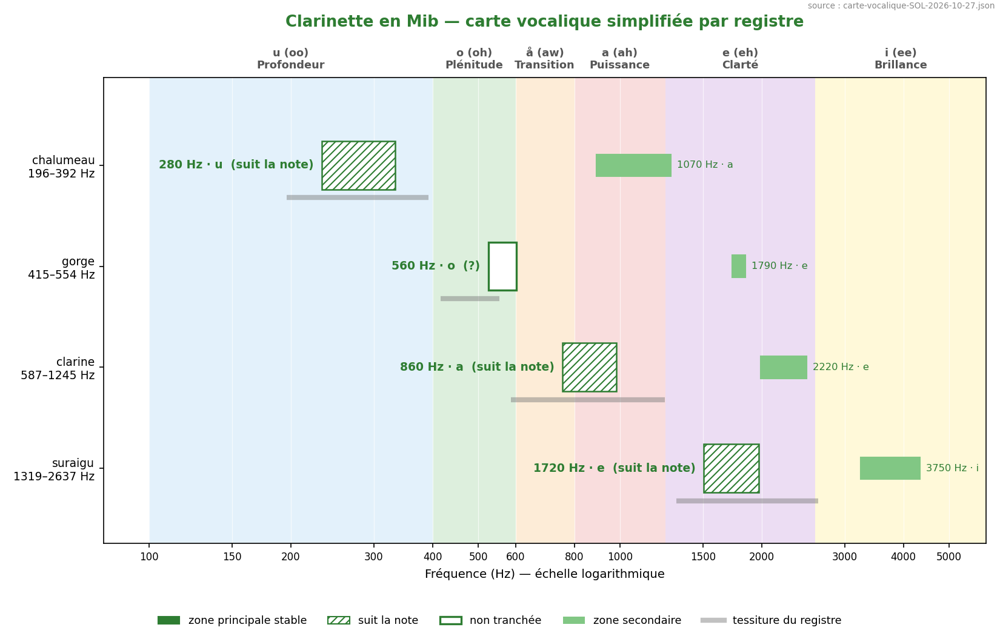
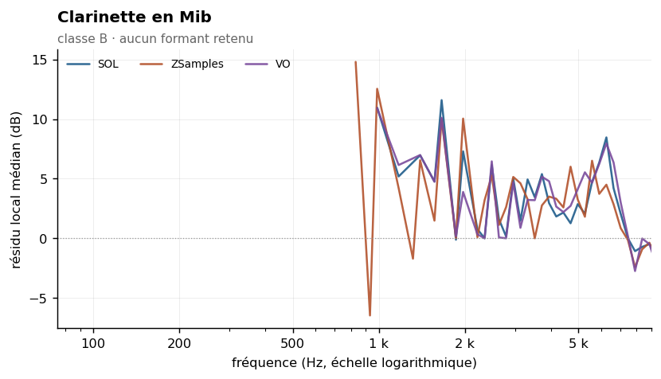
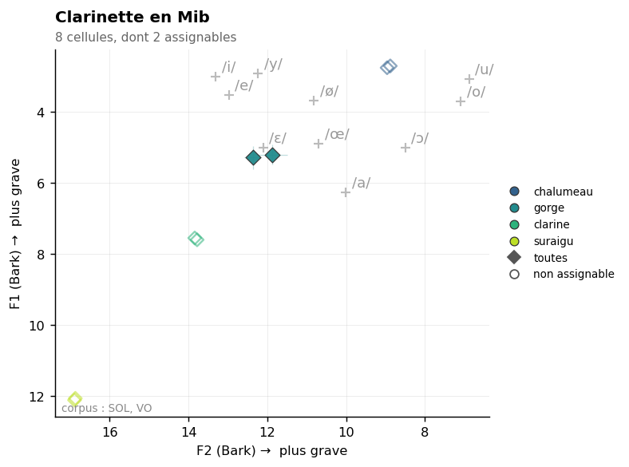

Eb clarinet
Sommaire › Les bois
| Classe | Provenance | Échantillons | Tessiture | Formants établis |
|---|---|---|---|---|
| B | IRCAM | 45 | G3–C | 0 |



Statut des formants — révision du 26/10/2026
Confrontation des cinq corpus. Provenance de ce corpus : IRCAM (FullSOL2020).
Aucun formant retenu. Si le résultat négatif est répliqué, c'est un acquis — voir
_CORPUS-CROISES.md.
Méthode 8 appliquée — aucun formant retenu. Voir
00-METHODE.md.
Le verdict est ici dicté par le corpus, non par la physique. Avec 45 échantillons seulement, aucun groupe de rang harmonique n'atteint les 5 notes distinctes requises par le test d'indépendance. Le seul candidat détecté, à 3 320 Hz, présente des résidus positifs cohérents (+4,8 et +2,5 dB) mais ne peut être validé.
Il faut souligner que ce candidat est cohérent avec Giesler (3 000–4 000 Hz) et avec le formant retenu de la clarinette en Sib (3 517 Hz). Autrement dit, tout indique qu'il est réel, mais la mesure actuelle ne permet pas de l'affirmer. C'est l'instrument des bois dont le résultat changerait le plus sûrement avec un corpus élargi.
Classe B, ρ = 0,68 — la plus basse des clarinettes après la contrebasse, ce qui s'explique mal et mériterait vérification sur un corpus plus large.
| Zone | Résidu | k = 4–7 | k = 8–15 | k ≥ 16 | Robustesse | Verdict |
|---|---|---|---|---|---|---|
| 3 320 Hz | +4,1 dB | +4,8 (4 notes) | +2,5 (4 notes) | +5,9 (1 note) | non | rejeté |
Les trois groupes ont tous des résidus positifs. Seule la couverture manque.
| Descripteur | Valeur | Lecture |
|---|---|---|
| Pente spectrale médiane | −19,6 dB/octave (σ 6,7) | la plus dispersée de tous les bois |
| Harmoniques par note | 16 [4–56] | variable selon le registre |
| Balance impair − pair | +4,2 dB | tuyau cylindrique fermé — signature nette |
| Enveloppe vraie | 1 141 Hz, σ 1 082 | σ proche de la valeur : mesure inexploitable note par note |
Deux chiffres sont parlants.
La dispersion de la pente, σ = 6,7 dB/octave, est la plus forte du corpus. Elle traduit le changement de régime entre les registres de la clarinette : le chalumeau, le clairon et le suraigu n'ont pas le même comportement spectral. C'est un argument fort en faveur d'une analyse par registre pour toute cette famille, davantage que pour les autres bois.
La balance impair − pair de +4,2 dB est la signature du tuyau cylindrique fermé, mesurée directement. Les quatre clarinettes sont les seuls bois à valeur positive.
| Source | Valeur annoncée | Notre mesure | Lecture |
|---|---|---|---|
| Giesler (1985), pour la clarinette | 3 000–4 000 Hz, i-ähnlich | 3 320 Hz (rejeté) | cohérent mais non validé |
| Yan_Adds (ancien) | F1 = 678 ± 211 Hz, /å/ | — | hauteur médiane (rapport 0,94) |
| Ancien Fp | 1 266 Hz | — | artefact de fenêtre |
| Sources classiques | aucune donnée propre à la Mib | — | non étudiée spécifiquement |
Le F1 de 678 Hz publié présentait un rapport de 0,94 au milieu géométrique de la tessiture : c'était la hauteur médiane, non un formant.
Data/registres.md ne définit les registres que pour « clarinette » (sous-entendu en Sib) :
chalumeau D3–D4 · gorge D#4–G#4 · clairon A4–A#5 · suraigu à partir de B5. À transposer pour
la Mib, ou à définir spécifiquement.
19 paires calculées. Fusion moyenne : 20 %. Voir ../_MELANGES.md.
| Couleur nouvelle avec | Se fond avec | ||
|---|---|---|---|
| Basson | 57 % | Tuba contrebasse | 79 % |
| Trombone ténor | 39 % | Tuba basse | 67 % |
| Cor anglais | 33 % | Petite flûte | 67 % |
À compléter. L'ancienne étude proposait une doublure clarinette Mib–petite flûte sur un Δ = 431 Hz décrit comme « complémentarité aiguë » (678 contre 1 109 Hz). Les deux valeurs étant des médianes de tessiture, cette analyse est sans fondement mesuré. Elle est à reprendre, et la méthode 12 serait ici plus appropriée qu'une comparaison de formants, puisque les deux instruments sont de classe B.
Aucun à ce stade. Figures prévues dans ../Versions-html-and-docx/media/ :
| Fichier prévu | Contenu |
|---|---|
clarinette_mib_composite.png |
enveloppe composite avec couverture, montrant l'insuffisance du corpus |
clarinettes_balance.png |
figure de famille : balance impair/pair des quatre clarinettes |
clarinettes_pentes.png |
figure de famille : les quatre pentes et leurs dispersions |
La zone à 3 320 Hz passe de rejetée à fragile-cr. Le bootstrap par note donne +3,6 dB [IC +2,1] en dessous du rang 11 et +5,1 dB [IC +3,1] au-dessus, sur 25 et 9 points : le test d'indépendance au rang est donc passé, alors que le seuil de comptage « ≥ 5 notes distinctes » le bloquait. C'est la robustesse de fenêtre qui échoue encore.
Ce résultat était pressenti dans ce fichier : le candidat était « cohérent avec Giesler (3 000–4 000 Hz) et avec le formant retenu de la clarinette en Sib (3 517 Hz) ». La parenté de famille est désormais appuyée par une mesure, même fragile. La pertinence formantique passe de « non pertinente » à « partielle ».
00-METHODE.md).